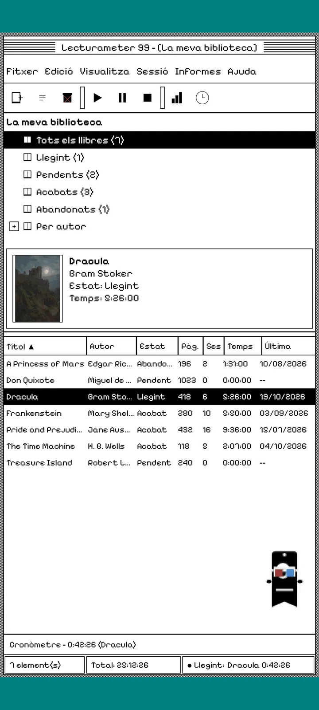
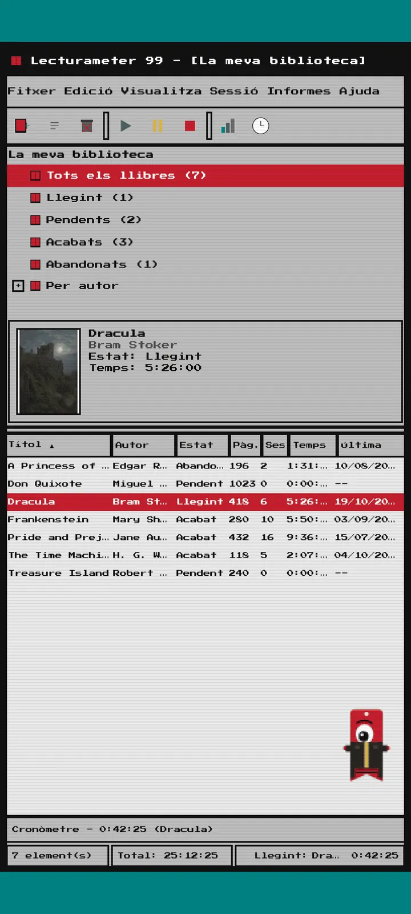
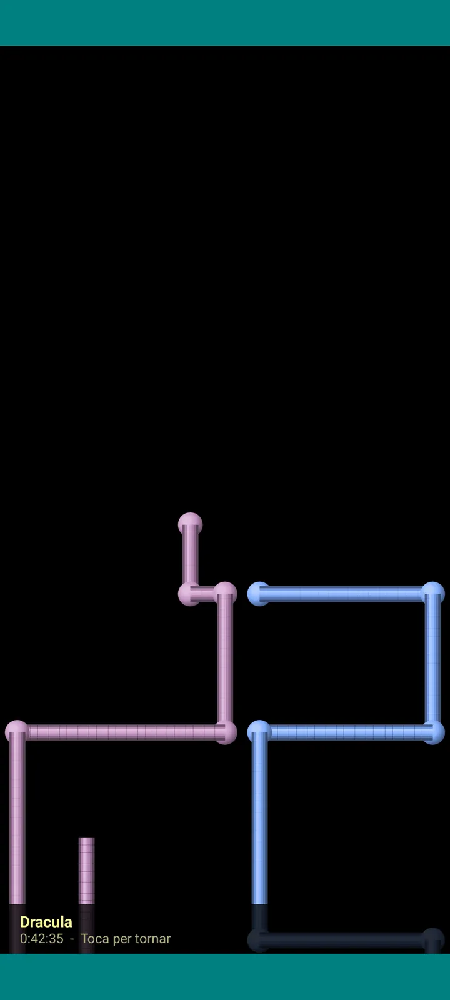

Lecturameter 99
Lecturameter com si l'haguessis instal·lat des d'un CD-ROM el 1999. Una app independent, amb finestres, menús i taules, que obre les teves còpies reals.
Abans Lecturameter 1999. Les botigues encara el poden mostrar amb aquest nom: és la mateixa app.

Què és
Un programa d'escriptori de finals dels noranta ficat al teu mòbil. Una sola finestra sobre un escriptori verd blavós, barra de menús, barra d'eines, arbre de carpetes, una taula densa i barra d'estat.
- Biblioteca en arbre: tots els llibres, llegint, pendents, acabats, abandonats i per autor
- Taula amb títol, autor, estat, pàgines, sessions, temps i darrera lectura. Toca la capçalera d'una columna per ordenar
- Cerca de llibres real, amb el mateix catàleg que fa servir Lecturameter
- Importa i exporta la còpia de seguretat de Lecturameter i el CSV de Goodreads. Les teves dades entren i surten sense perdre res

Per què existeix
Un experiment: reconstruir la idea de Lecturameter des de zero amb premisses de disseny radicalment diferents, sense tocar l'app real. De totes les reinterpretacions, la de 1999 va ser la que més em va agradar, així que la vaig acabar com un exercici divertit i la vaig convertir en un client complet. És més senzilla que Lecturameter a propòsit: és un experiment i, en principi, no tindrà més desenvolupament.
- Cronòmetre en una finestra flotant amb pantalla LCD verda. Es mou, es minimitza a una barra de tasques i continua comptant a la barra d'estat
- Quan aturis, el diàleg de desar sessió et deixa registrar-la per pàgines, per percentatge o només per temps, i calcula el teu ritme igual que Lecturameter
- Les sessions desades són sessions de Lecturameter: tornen a l'app moderna si exportes una còpia de seguretat de Lecturameter 99 i la importes a Lecturameter.

Informe de lectura
Les estadístiques són un informe imprès en text monoespai: resum, temps per llibre amb barres de blocs i velocitat en pàgines per dia.

Calendari de l'any
Cada dia de l'any es dibuixa com un caràcter segons les pàgines que has llegit, amb els darrers set dies a sota en barres de blocs.

Historial de sessions
Sessions agrupades per llibre en un arbre amb més i menys, amb cinc xifres a dalt: sessions, temps total, pàgines, pàgines per minut i pàgines per dia.
Temes
Classic 98 és gratis i és el predeterminat. El pack n'afegeix sis més a Android i quatre a iPhone, cadascun amb el seu fons i els seus sons.

Es tria al menú Visualització
Visualitza, Tema... obre una finestra amb els temes: set a Android i cinc a iPhone. El canvi arriba a totes les finestres, al cronòmetre i a Pagi alhora.
- Clàssic 98, gratuït i per defecte: finestres grises, barres de títol blau marí i escriptori verd blavós
- Pack de temes: 1984, Gumdrop, Memory, Towers, Core i 8-bit. A iPhone, sense 1984 ni Gumdrop
- Cada tema porta el seu fons d'escriptori i els seus sons per als tocs, les finestres i el cronòmetre
- Visualització, Sons del tema els apaga si llegeixes en silenci

Clàssic 98
Finestres grises, barres de títol blau marí i escriptori verd blavós. Gratuït, és el tema amb què s'obre l'app.

1984
Un escriptori d'un bit en blanc i negre, amb patrons de punts i finestres quadrades. Només Android.

Llaminadura
Plàstic de colors translúcid, botons arrodonits i ratlles al fons. Només Android.

Memòria
Els menús d'una consola de discos dels noranta, en blaus foscos.

Torres
Una altra consola de discos dels noranta, blau nit amb línies blau clar.

Nucli
Una consola negra i verda, com una pantalla que no s'apaga mai.

8 bits
Píxels grossos, pocs colors i lletres de blocs.

Prova'l abans de pagar
Toca un tema bloquejat i tota l'app canvia a aquest tema. Si tanques sense comprar, torna el que tenies.
Estalvis de pantalla
Només apareixen amb el cronòmetre en marxa i sense tocar el mòbil. Esperen 1, 3 o 5 minuts, o mai. Un toc i tornes, i el cronòmetre continua comptant.

Llibres voladors
Llibres de píxels que volen batent les tapes per una pantalla negra.

Camp de lletres
Lletres de molts alfabets que passen a poc a poc, com un camp d'estrelles.

Canonades de pàgines
Canonades fetes de pàgines que es dibuixen soles fins que omplen la pantalla.

Pagi rebota
El Pagi rebotant contra les vores de la pantalla.

Rellotge de lectura
El temps de la sessió en xifres LCD grans.

Pagi 99 i les seves disfresses
Pagi també viatja al 1999: pixelat i lliure per la pantalla, com els assistents d'oficina d'aleshores. L'arrossegues, parla quan el toques i et mostra els consells en globus grocs. Té vuit disfresses, que tries a Visualitza, Disfressa de Pagi..., i pots provar-les abans de pagar.
- Reproductor de casset
- Gorra del revés
- Ulleres 3D
- Ulleres de sol de neó
- Disquet a la mà
- Jaqueta de cuir
- Mascota de butxaca
- Corona de cartró
Botiga
L'app és gratuïta i completa per registrar les teves lectures. El que es compra només canvia com es veu.
Tota l'app, sense límit de temps.
- Biblioteca, cerca, cronòmetre i sessions
- Informe de lectura i historial de sessions
- Sessions manuals i desades per pàgines, per percentatge o per temps
- Consell del dia i enviament de comentaris des del menú Ajuda
- Còpia de seguretat de Lecturameter i CSV de Goodreads, d'anada i tornada
- Tema Clàssic 98 i Pagi 99
- Sense compte i sense anuncis
Pagaments únics, sense subscripcions.
- Paquet de temes, 3,49 €: 6 temes amb fons i sons, i a més els estalvis de pantalla
- Estalvis de pantalla, 1,99 €: els 5 estalvis de pantalla
- Disfresses del Pagi, 1,99 €: les 8 disfresses
- Tot el 1999, 4,49 €: temes, estalvis de pantalla i disfresses
Només Android: consells opcionals al menú Ajuda, si em vols convidar a un cafè.
A iPhone no hi ha consells ni els temes 1984 i Gumdrop (Apple no els permet); tota la resta és igual.
Els temes i les disfresses es poden provar en directe abans de pagar. Si tanques sense comprar, torna el que tenies.
Què canvia respecte a Lecturameter
Igual que Lecturameter
- Les mateixes dades: llibres, sessions, estats, puntuacions i notes. El fitxer de còpia de seguretat és el mateix a les dues apps.
- Cerca de llibres per títol o autor.
- Cronòmetre real: continua comptant en segon pla i encara que tanquis l'app.
- Sense compte i sense anuncis. Només fa servir internet per cercar llibres i, si ho deixes activat, per a estadístiques d'ús pseudònimes i informes d'errors (ho pots desactivar a Ajuda, Privadesa).
- Disponible en 50 idiomes.
Només a l'edició 1999
- Una interfície d'escriptori de 1999. Res de Material.
- Finestres de veritat: les arrossegues, les minimitzes i les tanques amb la creu.
- Informe de lectura en text, amb un calendari dibuixat amb caràcters.
- Menú contextual en mantenir premut i dreceres de teclat si en connectes un.
- Pagi 99 pixelat amb globus de consells.
- Temes opcionals amb el seu fons i els seus sons, estalvis de pantalla mentre corre el cronòmetre i disfresses per al Pagi.
El que no té, a propòsit
- Sense Pro i sense subscripció. Registrar les teves lectures és tot gratuït; la botiga només ven aspecte.
- Sense reptes, bingos, resum anual ni ginys.
- Sense sessió immersiva, sons ambientals ni còpia de seguretat a Google Drive. La còpia es desa com a fitxer.
Aconsegueix-la
Lecturameter 99 és gratis i està disponible per a iPhone i per a Android.
Llegeix l'entrada del blog per veure d'on surt i què pots esperar.